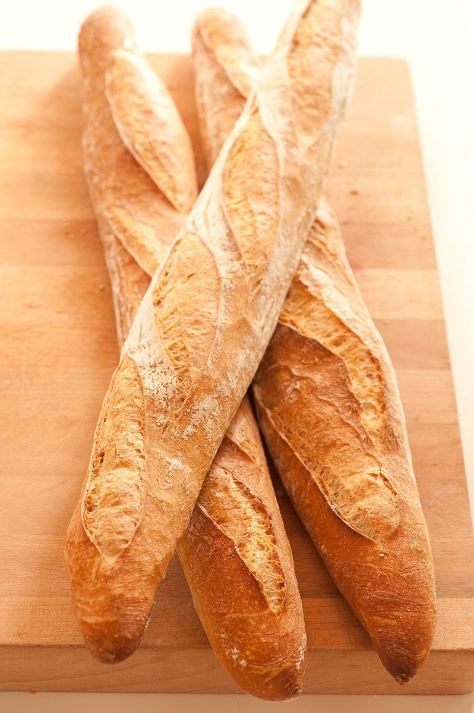

手作りパンのお店らぱん

香川県坂出市林田町にある、手作りパンのお店「らぱん」のご案内ページです。営業時間やメニューは準備中。まずはInstagramをのぞいてみてください。
制作側の連想
ドミノ牌の端あわせ
制作側は店名の「らぱん」を見て、まず3文字という数を連想し、そこからドミノ牌を思い浮かべました。牌は、隣り合う端の目をそろえて一列につないでいくものです。そこでこのサイトは、5つのページを「1・2・3・4・5」の目の牌として、端をあわせながらつなぐ作りにしています。これは制作側の連想で、お店の理念・由来とは無関係です。
目ごとの写真(イメージ)
パンのいろいろ、牌のように。
写真はお店のものではなく、国外または撮影地不明のフリー素材です。お店で取り扱うパンを示すものではありません。




ご案内
確認できていること
| 所在地 | 〒762-0012 香川県坂出市林田町3798 |
|---|---|
| 電話 | なし |
| 営業時間 | 準備中 |
| 定休日 | 準備中 |
| メニュー・価格 | 準備中 |
| ご予約 | 準備中 |
| 駐車場 | 準備中 |
| SNS | Instagram @lapan_2022 |